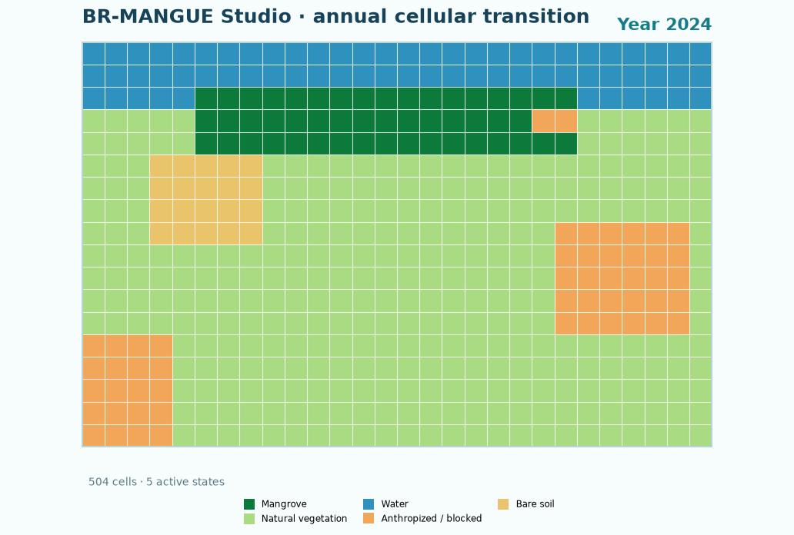

Use your own data
Load land-cover categories and a digital elevation model (DEM). Optional masks and suitability layers can refine a scenario.
Desktop software for research
BR-MANGUE Studio simulates mangrove transitions over time using cellular automata and geospatial raster data. Build a scenario, run it on your computer, and inspect the results.
Windows 10/11 · Linux x86_64 preview · Version 1.1.0 · English and Portuguese (Brazil)
Example simulation output

What it does
Prepare two core inputs, define how their classes relate to the model, and run a simulation for the years you choose.
Load land-cover categories and a digital elevation model (DEM). Optional masks and suitability layers can refine a scenario.
Run the full grid in memory or process it in persistent blocks, depending on available memory and storage.
Review maps, transition summaries, trajectories, and run metadata saved with your project.
Designed for flexible research
BR-MANGUE Studio does not bundle a particular land-cover or elevation dataset. Use suitable geospatial inputs for your study area, coordinate system, resolution, and research question.
Review input requirements →Performance records
Published figures describe specific software runs and hardware. They are not ecological validation or a guarantee of speed on another computer.